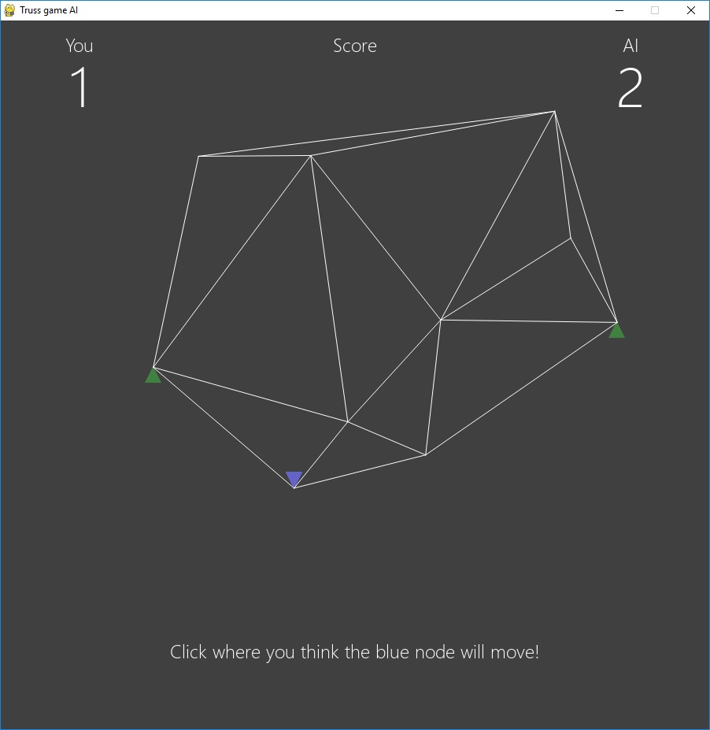

Truss game
A random truss is loaded at one node. Guess where that node ends up once it settles.
An AI opponent guesses too — from a screenshot alone. It never sees the coordinates or the topology, which is what makes the contest fair.

How it works
Ten nodes are scattered in a box and connected by a Delaunay triangulation. The two outermost nodes are pinned, and one of the rest is pulled straight down. The structure is solved with linear finite elements, so members turn red in compression and blue in tension as the load ramps on.
Displacements come out around half the size of the structure itself, which is why the result looks so dramatic — and why guessing it is harder than it first appears.
How good is the AI?
Worse than one line of arithmetic. Measured over 150 trusses it had never seen:
| Predictor | Mean | Median |
|---|---|---|
| Guess straight down, by the average travel | 59.7% | 66.5% |
| The trained model | 55.6% | 59.4% |
| Click on the node where it starts | 0.0% | 0.0% |
Scores are normalised by how far the node actually travelled, so clicking its starting point scores zero by definition — that row is the floor, not a bad result.
The model finds the loaded node almost perfectly from pixels — 0.97 correlation with its true position — and then essentially drops it by the average amount. That earns most of the score and none of the mechanics. Which is the interesting part: the picture contains everything needed to solve it, so the difficulty is relational rather than visual.